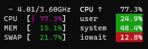

English
English
 Ελληνικά
Ελληνικά
benchmark¶
Overview¶
Intended for use in identifying potential Lancache bottlenecks, which is typically disk IO. Can be used both server side as well as client side.
benchmark uses the same download logic as prefill, however it offers the following advantages instead:
- Portable, no need to login to Steam in order to start the benchmark.
- Able to be used across multiple machines at the same time, without logging in.
- Continuous sustained download, combines multiple apps into a single download.
- Repeatable, will perform the same download every time.
- Randomized, requests will be completed in a random order.
The workflow for benchmarking is to setup a workload with the setup subcommand, which can be used as many times as desired with the run subcommand.
setup¶
Creates a benchmark "workload" comprised of multiple apps, that will then be benchmarked using the run sub-command. Generally, the ideal benchmark will be the one that most closely matches the apps that you will usually be downloaded. This can be setup for example with ./SteamPrefill benchmark setup --use-selected. A benchmark can also be setup by specifying an individual game's appid (or more than one if desired), or by using one of the built in presets like --preset SmallChunks or --preset LargeChunks
Warning
This benchmark feature is typically used to test disk IO performance. Linux will cache files that it reads in system memory to improve performance of frequently used files. In order to generate an accurate benchmark where files are only ever read from disk, the workload size needs to be larger than the Lancache server's total amount of memory.
Once the workload has been generated, a summary with some stats will be displayed. The chunk size distribution will give you an idea of the performance characteristics of the workload you created. The ideal performance scenario is when the chunk sizes are primarily 1 MiB or larger, whereas the worst possible scenario is having them be on the small side. Note that there is nothing that you can do about the chunk sizes, these are the size that the chunks are stored on Steam's servers. The distribution is here just for the sake of visibility into what is being tested.
| Option | Values | |
|---|---|---|
| --use-selected | Creates a workload file using apps previously specified with select-apps. Ideal for most use cases, since it likely aligns with games that will be downloaded by real event clients. |
|
| --all | Benchmark workload will be created using all currently owned apps. | |
| --appid | The id of one or more apps to include in benchmark workload file. Useful for testing a specific app, without having to modify previously selected apps. AppIds can be found using SteamDB | |
| --no-ansi | Application output will be in plain text, rather than using the visually appealing colors and progress bars. Should only be used if terminal does not support Ansi Escape sequences, or when redirecting output to a file. | |
| --preset | SmallChunks, LargeChunks | Can be used to quickly setup a benchmark with a predefined workload of differing characteristics. LargeChunks represents a best case scenario where chunk sizes are close to 1Mib, whereas SmallChunks is a worst case scenario of small files. |
run¶
Runs multiple iterations of the benchmark workload created with benchmark setup. Useful for measuring the throughput for the Lancache server, and diagnosing any potential performance issues.
Warmup
The first part of the benchmark run will be the initialization + warmup of the workload. The workload file previously created with benchmark setup will be loaded from disk, and the ordering of the requests to be made will be randomized.
Next, the warmup run will download all of the workload's requests, which is necessary for a few reasons:
- It ensures that all of the data has been downloaded, and is cached by the Lancache.
- Allows for data that has been cached in the server's memory to be flushed by the new requests, ensuring that we are testing disk I/O.
- Gives the CPU a chance to physically warm up, minimizing potential fluctuations between runs.
Running
After the warmup, benchmark run will begin downloading the same workload in a loop, for as many iterations as specified with --iterations (default: 5). After each iteration, it will display the overall average download rate for that iteration.
Once all the iterations have been completed, a summary table displaying the min/max/average will be shown:
Identifying bottlenecks
While benchmark run is useful for getting an overall idea of your server's performance, it won't however identify bottlenecks in the system by itself. It is instead primarily intended to be another tool to help with identifying bottlenecks, by providing a constant and even load on the server.
It is recommended that you run some sort of system monitoring software on the server while running your benchmarks, so that you can get an idea of how your server is handling the load. There are many monitoring tools available, such as Glances, that provide a visual overview of the system.
Two important measurements to keep an eye on, are the overall CPU usage, as well as iowait. The majority of bottlenecks for servers will be either the speed of the CPU, or the speed at which the disk(s) can read.

| Option | Values | Default | ||
|---|---|---|---|---|
| --concurrency | -c | 1-100 | 30 | The maximum number of concurrent requests in flight at one time. A higher number may improve maximum throughput, but may possibly have a negative effect if the cache server cannot process the concurrent requests fast enough. |
| --iterations | -i | 1-25 | 5 | The number of runs to do before calculating overall results. |
| --unit | bits, bytes | bits | Specifies which unit to use to display download speed. | |
| --no-ansi | Application output will be in plain text, rather than using the visually appealing colors and progress bars. Should only be used if terminal does not support Ansi Escape sequences, or when redirecting output to a file. |